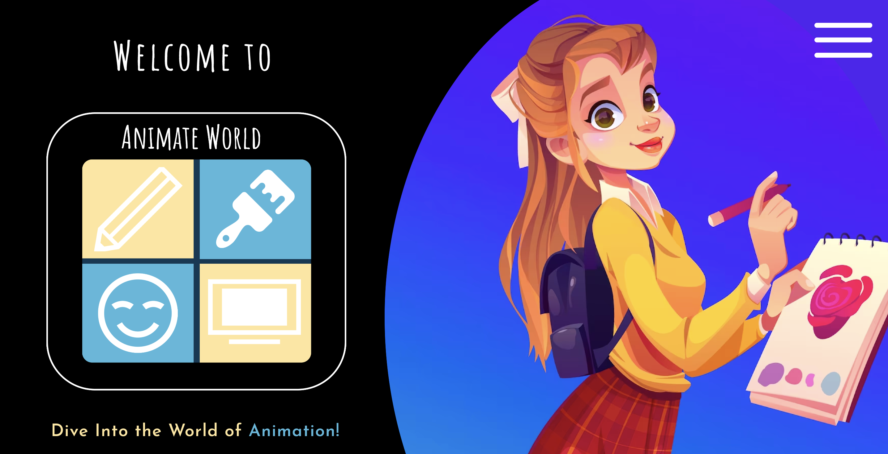

AnimateWorld
A digital experience that teaches users about the rich and diverse history of animation.
Project Description
AnimateWorld is a UI/UX design prototype that presents an engaging, educational exploration of the global history of animation—highlighting key moments, cultural milestones, and influential studios worldwide.
Designed as a sleek, interactive timeline, AnimateWorld blends visual storytelling with vibrant design elements to reflect the creativity of the animation medium.
The project emphasizes accessibility and user engagement through responsive layouts, intuitive navigation, and micro-interactions that encourage exploration and discovery.
My Contributions
- Created the visual style guide, layout wireframes, and high-fidelity prototype.
- Designed an engaging user interface with emphasis on storytelling and user flow.
- Developed responsive mockups using Figma.
- Ensured accessibility and inclusive design practices across all screens.
- Conducted in-depth research highlighting global animation milestones and cultural influence.
Technologies Used
- Figma (UI/UX Prototyping)
- Google Workspace (Sheets and Excel)
- Canva